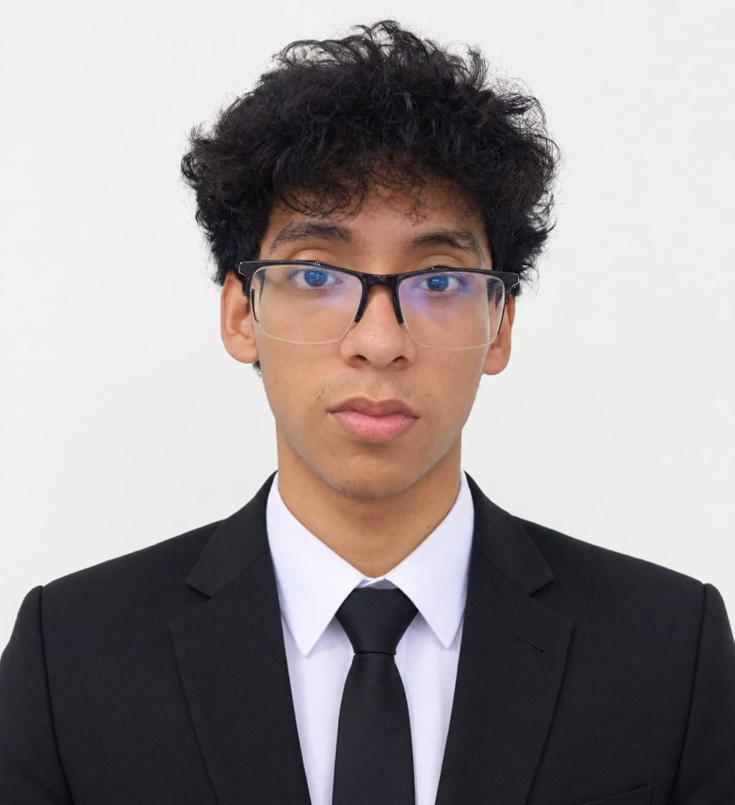
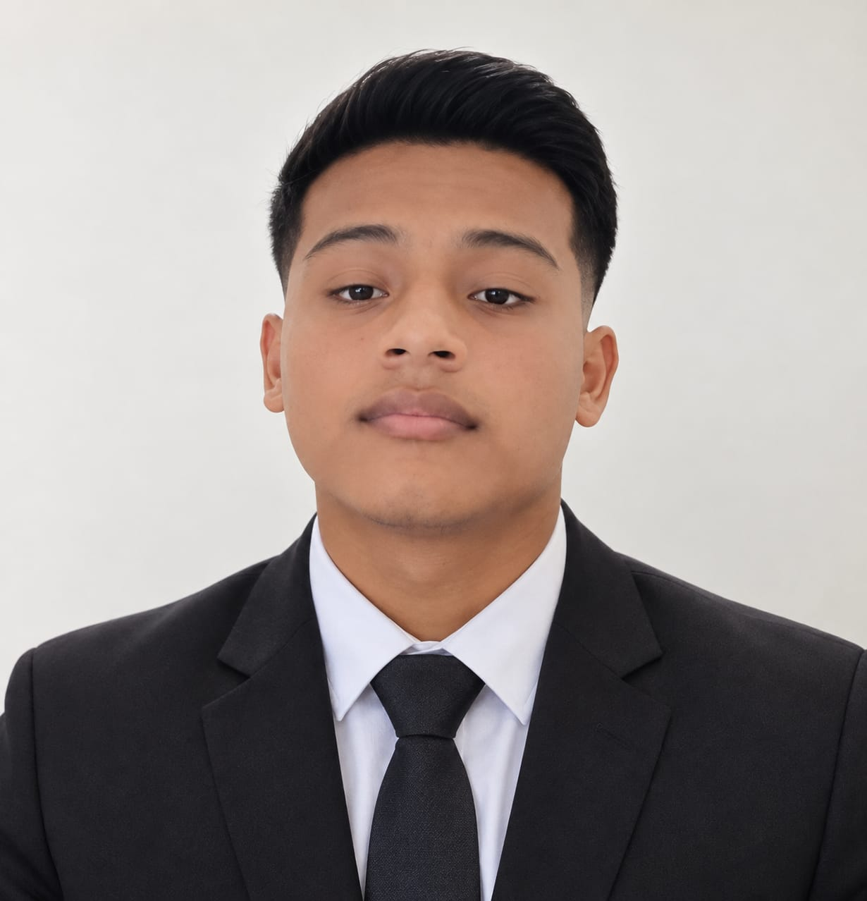
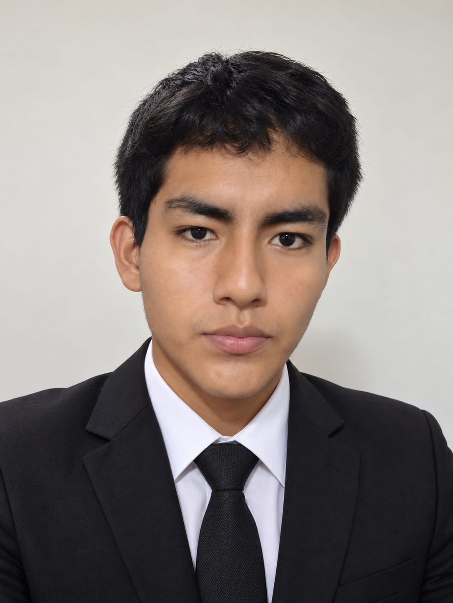

KINEX · CONTROL GESTUAL
Kinex: Controla tu PC
con tu
mano.
Kinex convierte los gestos de tu mano en acciones de Windows usando una webcam.
más personal con el computador.
Una conexión
más natural.
Un gesto pequeño.
Otra manera de interactuar.
Kinex es un proyecto académico que explora el control de Windows con la mano. Una cámara observa el movimiento; el sistema reconoce la intención y la convierte en una acción configurada.
Con lo que ya tienes.
Una webcam como punto de partida, sin un sensor de profundidad dedicado.
A tu manera.
Perfiles, calibración y gestos para adaptar la interacción a cada persona.
En tu computador.
El reconocimiento de la mano se procesa localmente, con un modelo de visión.
02 / EL LENGUAJE DE LA MANO
Hay mucho que decir
con un gesto.
Elige una postura y descubre
qué reconoce Kinex.
Señala. El cursor te sigue.
El índice extendido marca la posición. La aplicación convierte esa coordenada en movimiento dentro de la zona calibrada.
Reconocimiento y acción básica implementados.
Este explorador ilustra los gestos. La página no utiliza tu cámara ni controla tu dispositivo.
¿Y si el gesto fuera tuyo?
El motor también permite entrenar posturas estáticas propias.
03 / POR DENTRO
Del movimiento
a la pantalla.
Un monolito modular.
Cada pieza tiene su responsabilidad.
Toca una pieza para explorar. La aplicación valida las acciones; visión produce datos.
Ver el repositorio , abre otra pestaña04 / QUIÉNES LO HACEN POSIBLE
Equipo Kinex
Cinco áreas, un mismo proyecto.
Universidad Nacional de Trujillo.
-
Base de datos
Gabriela Gómez Flores
Diseño y persistencia de los perfiles.
Persistencia de perfiles -

Dominio y aplicación
César Ruiz Vidaurre
Reglas de control, perfiles y sesiones.
Reglas de control -

Visión artificial
Jhezzer Hilario Lázaro
Detección de la mano y reconocimiento de gestos.
Reconocimiento de gestos -

Integración con Windows
Jean Olivares Polo
Acciones protegidas y conexión del núcleo.
Acciones en Windows -
Interfaz de usuario
Nahuel Martínez Gutiérrez
Dashboard y experiencia de escritorio.
Experiencia de escritorio
SIGAMOS EXPLORANDO
La tecnología empieza
por una buena pregunta.
¿De qué otra forma podemos interactuar con un computador?
Acércate al stand y
conoce el proyecto.
documentación, abre otra pestaña